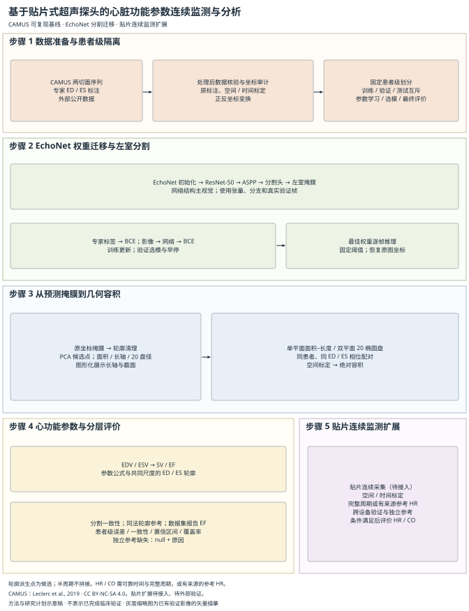
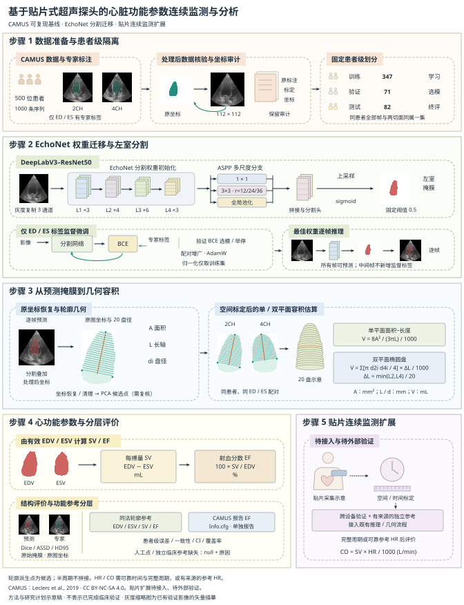

参考图 → 布局规划 → 项目总图
沿用浅色阶段分区、虚线分组、图形化网络与几何表达。当前显示内容替换后的总图，点击阶段可对照修改过程。
用户参考图的矢量结构重建
主要标题、标签、分组、图形和连线可编辑。影像、结果图表及细小结构来自原图裁片的量化矢量描摹，缩略图内部小字为路径，不恢复医学影像或曲线原始数据。原图来源与再发布许可尚未提供，仅供个人版式研究。


先固定分区、模块和流向
前三层展开数据、分割、几何主线；底部左侧安排功能与参考分层，右侧为贴片待验证扩展。总图没有引入原图的肿瘤、多组学或生存分析内容。


项目内容总图 · 作者审阅稿
固定验证病例 patient0008，使用已有缓存与保存的预测。当前 CAMUS 基线与贴片扩展分开；人工关键点和独立临床参考缺失时保留空值及原因。数据署名：Leclerc et al., IEEE TMI (2019)，CC BY-NC-SA 4.0。



SVG 的文字保持可编辑，缩略图为灰度量化后的路径，不是整张 PNG 封装。图件说明研究方法与计划，不表示已完成临床验证。